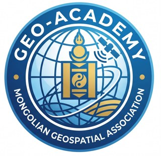
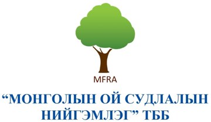
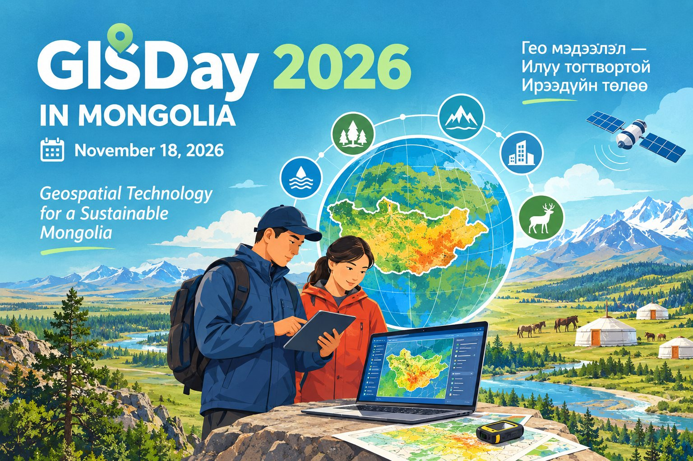

Монголын Гео-мэдээллийн салбарын төлөөлөл
The Mongolian Geospatial Association advances remote sensing, GIS, GNSS, and photogrammetry technologies to empower professionals and students across Mongolia.
Зайнаас Тандан Судлал
Advanced satellite imagery analysis and Earth observation technologies for environmental monitoring and resource management.
ГМС Систем
Geographic Information Systems for spatial data analysis, mapping, and decision-making support across multiple sectors.
GNSS Технологи
Global Navigation Satellite Systems for precise positioning, surveying, and geospatial data collection.
Фотограмметр
3D modeling and measurements from photographs for mapping, surveying, and documentation projects.
Чадавхи Бэхжүүлэлт
Professional training programs and workshops to develop geospatial expertise across Mongolia.
Олон Улсын Хамтын Ажиллагаа
Partnerships with geospatial organizations worldwide to advance knowledge sharing and collaboration.

Geospatial Technologies, GeoAI & Real-World Applications Геомэдээллийн технологи, GeoAI ба бодит хэрэглээ
Connecting people, data, tools, and artificial intelligence to solve environmental and societal challenges. Хүн, өгөгдөл, багаж хэрэгсэл, хиймэл оюун ухааныг холбож байгаль орчин, нийгмийн тулгамдсан асуудлыг шийдвэрлэх.
A collaborative platform for geospatial knowledge and innovation Геомэдээллийн мэдлэг, инновацийн хамтын платформ
A knowledge-sharing initiative hosted by the Mongolian Geospatial Association (MGA), bringing together people who use geospatial data, technologies, and analysis. Монголын Геомэдээллийн Холбооноос (MGA) зохион байгуулдаг, геомэдээллийн өгөгдөл, технологи, шинжилгээ ашигладаг хүмүүсийг нэгтгэсэн мэдлэг хуваалцах санаачилга.
Bring together researchers, practitioners, students, public agencies, and technology communities. Судлаач, мэргэжилтэн, оюутан, төрийн байгууллага, технологийн хамт олныг нэгтгэнэ.
Share tools, workflows, skills, and reproducible approaches across GIS and Earth observation. ГМС болон дэлхийн ажиглалтын чиглэлээр багаж хэрэгсэл, ажлын урсгал, ур чадвар, давтан хэрэглэх боломжтой аргачлалыг хуваалцана.
Explore GeoAI, automation, digital twins, cloud platforms, and new applications. GeoAI, автоматжуулалт, дижитал ихэр, үүлэн платформ болон шинэ хэрэглээг судална.
A practical forum for learning, discussion, collaboration, and translating geospatial knowledge into action. Суралцах, хэлэлцэх, хамтран ажиллах, геомэдээллийн мэдлэгийг бодит үйл ажиллагаа болгох практик талбар.
Geo-Academy explores the evolving geospatial ecosystem — from foundational methods to AI-powered analysis and operational applications. Гео-Академи нь суурь аргачлалаас эхлээд хиймэл оюунд суурилсан шинжилгээ, бодит хэрэглээ хүртэлх геомэдээллийн хөгжиж буй экосистемийг судална.
Satellite imagery, GNSS, drones, spatial databases, cloud processing, open data. Хиймэл дагуулын зураг, GNSS, дрон, орон зайн өгөгдлийн сан, үүлэн боловсруулалт, нээлттэй өгөгдөл.
AI for mapping, classification, prediction, change detection, and spatial decision support. Зураглал, ангилал, таамаглал, өөрчлөлт илрүүлэлт, орон зайн шийдвэр гаргалтад хиймэл оюун ухаан.
3D GIS, simulation, game engines, smart cities, infrastructure, and environmental systems. 3D ГМС, загварчлал, тоглоомын хөдөлгүүр, ухаалаг хот, дэд бүтэц, байгаль орчны систем.
Forests, land use, climate, disaster risk, urban systems, agriculture, and conservation. Ой, газар ашиглалт, уур амьсгал, гамшгийн эрсдэл, хотын систем, хөдөө аж ахуй, байгаль хамгаалал.
Core idea: connect data + methods + AI + domain expertise to solve real problems. Гол санаа: өгөгдөл + арга зүй + хиймэл оюун + салбарын мэдлэгийг холбож бодит асуудлыг шийдэх.
Geo-Academy provides a platform for geospatial learning, technology awareness, skills development, and community exchange. Гео-Академи нь геомэдээллийн сургалт, технологийн мэдлэг, ур чадвар хөгжүүлэлт, хамт олны солилцооны талбарыг бүрдүүлнэ.

MFRA brings forest science perspectives and practical needs into discussions on monitoring, assessment, and sustainable management. MFRA нь ойн хяналт-шинжилгээ, үнэлгээ, тогтвортой менежментийн хэлэлцүүлэгт ойн шинжлэх ухааны үзэл баримтлал, практик хэрэгцээг авчирна.
Together, the organizations connect GIS, remote sensing, GeoAI, and forest applications. Хоёр байгууллага хамтран ГМС, зайнаас тандан судлал, GeoAI болон ойн салбарын хэрэглээг холбож байна.
Presenter / Илтгэгч: Dr. Ts. Khongor (Доктор Ц.Хонгор) — Mongolian Forest Research Association
View only — use the arrows, thumbnails or ← → keys. Зөвхөн үзэх горим — сум, жижиг зураг эсвэл ← → товчоор шилжүүлнэ.
Share your expertise, tools, research, and real-world geospatial applications. Өөрийн мэдлэг туршлага, хэрэгсэл, судалгаа, геомэдээллийн бодит хэрэглээгээ хуваалцаарай.
Suggested themes: GeoAI & machine learning • GIS and remote sensing • cloud geospatial tools • digital twins • automation • open-source workflows • applied case studies Санал болгох сэдэв: GeoAI ба машин сургалт • ГМС ба зайнаас тандан судлал • үүлэн геомэдээллийн хэрэгсэл • дижитал ихэр • автоматжуулалт • нээлттэй эхийн ажлын урсгал • хэрэглээний кейс судалгаа
Propose a topic, speaker, demonstration, or case study. Help shape the 2027 programme! Сэдэв, илтгэгч, үзүүлэн эсвэл кейс судалгаа санал болгож 2027 оны хөтөлбөрийг хамтдаа бүрдүүлээрэй!
Propose a topic · Сэдэв санал болгохГишүүнчлэлийн Бүртгэл
Workshops, celebrations and community gatherings for Mongolia's geospatial community. Монголын геомэдээллийн хамт олны семинар, баяр ёслол, уулзалтууд.

Geospatial Technology for a Sustainable Mongolia Геомэдээлэл — илүү тогтвортой ирээдүйн төлөө
September 2027 · Ulaanbaatar, Mongolia 2027 оны 9-р сар · Улаанбаатар
The next international geospatial workshop. Programme, venue and call for speakers will be announced here. Дараагийн олон улсын геомэдээллийн семинар. Хөтөлбөр, байршил, илтгэгч урих зарыг энд мэдээлнэ.
Stay updated · Мэдээлэл авахCountdown to 1 September 2027; exact date to be confirmed. Тодорхой огноог дараа баталгаажуулна.
International Workshop on Remote Sensing and Geospatial Applications
Programme: 2 keynotes · Session I: Geospatial Solutions and Tools · Session II: Synergistic Case Studies for Earth Observation · Closing Session: Synergy & Next Steps
| Time | Session / Event |
|---|---|
| 08:30 – 09:00 |
Registration
Participant Registration & Welcome
|
| 09:00 – 09:20 |
Opening
Opening Ceremony
|
| 09:20 – 09:30 |
Ceremony
MOU Signing Ceremony
Memorandum of Understanding signing between Mongolian University of Science and Technology (MUST) and National Central University (NCU), Taiwan
|
| 09:30 – 10:00 |
Keynote
Remote Sensing, Spatial Analysis and AI: Operations and Applications in Taiwan
Dr. Fuan Tsai — President, Chinese Society of Photogrammetry and Remote Sensing (CSPRS); Professor, Center for Space and Remote Sensing Research, National Central University (NCU), Taiwan
|
| 10:00 – 10:25 |
Keynote
Introduction of the National Remote Sensing Center
Dr. Lkhagvadorj Nanzad — Satellite Application and Remote Sensing Research Division, Institute of Research and Information of Meteorology, Hydrology and Environment, Mongolia
|
| 10:25 – 10:45 |
Break
Coffee Break ☕
|
| 10:45 – 12:30 |
Session I
Geospatial Solutions and Tools
|
| 12:30 – 14:00 |
Lunch
Lunch Break 🍽️
|
| 14:00 – 15:40 |
Session II
Synergistic Case Studies for Earth Observation
|
| 15:40 – 16:00 |
Break
Coffee Break ☕
|
| 16:00 – 17:30 |
Closing Session
Synergy & Next Steps
|
Interactive Google Earth Engine tools built by Mongolia's geospatial community. Монголын геомэдээллийн хамт олны бүтээсэн Google Earth Engine интерактив хэрэгслүүд.
NDVI (NIR − RED) / (NIR + RED)RVI NIR / REDSAVI 1.5 (NIR − RED) / (NIR + RED + 0.5)LAI 3.618 × EVI − 0.118 (Boegh et al. 2002)2019–2026 Sentinel-2 L2A, SCL cloud mask2017–2018 Sentinel-2 L1C, s2cloudless maskBands B2, B3, B4, B8, B8A · cloud < 25%Norovsuren, B., Batchuluun, T., Renchin, T., & Natsagdorj, E. (2023). Development of the spectral forest index in the Khangai region, Mongolia using Sentinel-2 imagery. Forest Science and Technology, 19(1), 1–11. doi:10.1080/21580103.2022.2153928
Холбоо Барих